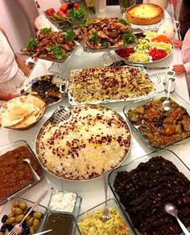

Ingredients
- Basmati rice -- 3 cups
- Oil -- 1/2 cup
- Stewing lamb or beef, cubed -- 2 pounds
- Onions, thinly sliced -- 2
- Garlic, minced -- 3 or 4
- Cinnamon -- 1 stick
- Cardamom pods -- 8 to 10
- Cumin seeds -- 2 teaspoons
- Whole cloves -- 6 to 8
- Stock or water -- 2 or 3 cups
- Salt and pepper -- to taste
- Carrots, peeled and cut into matchsticks or shredded -- 3
- Sugar -- 1/4 cup
- Raisins, soaked in water and drained -- 1/2 cup
- Salt -- to taste
- Sliced almonds, toasted -- 1/2 cup
- Garam masala -- 2 teaspoons
Methods
- boil beef in water adding all ground spices and salt till tender.it wil take half an hour in cooker.
- take oil in pan add onion and fry it til got brown.now add tomatoes in it.
- add beed and fry it for 5 to 10 minutes
- now add stew (yakhni) which should be double of the rice
- add salt,all ground spices, raisin
- when some water is left add all the nuts in it and then cover it for dam for 20 minutes.
- cut carrots into thin slices boil it for 5 minutes thn drain water
- add 1 tbp oil in pan thn add boied carrots in it and sugar sot it for a while then remove from stove.
- put rice into serving dish put these carrots on it and also fine choped nuts for garnishing.